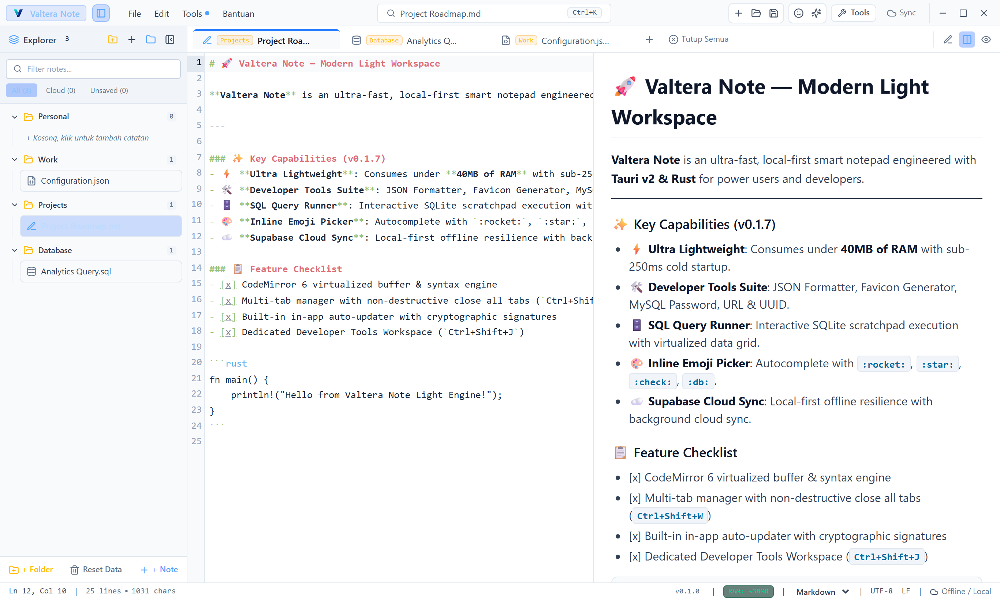
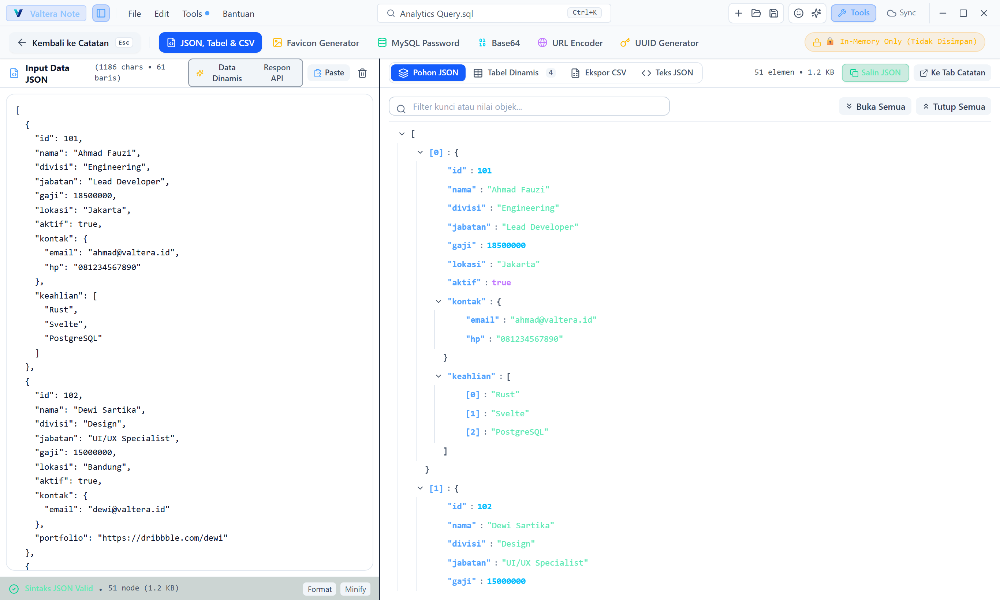
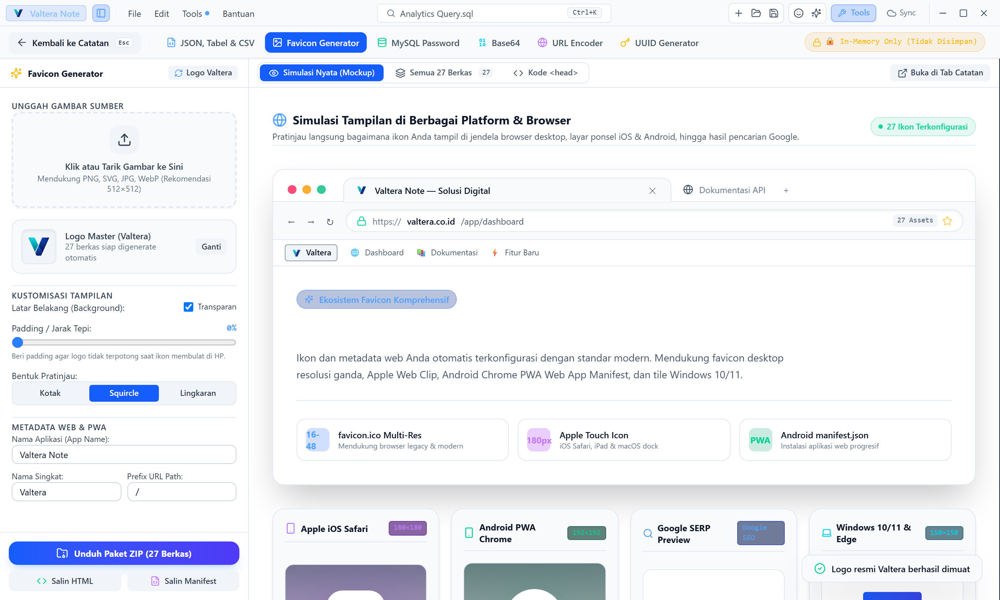
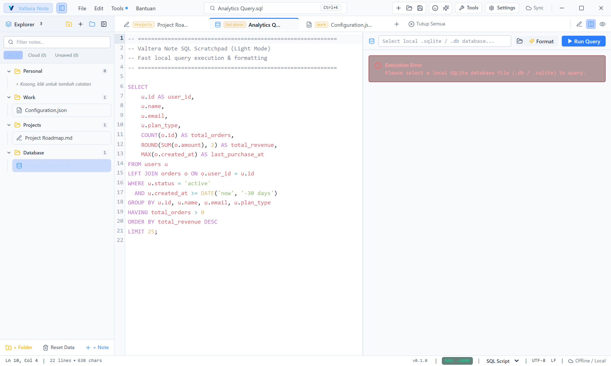
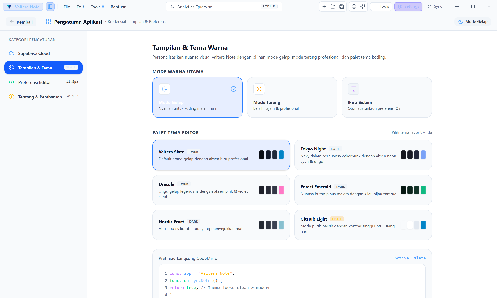

Editor teks dan scratchpad lokal berkecepatan tinggi yang dibangun dengan Tauri v2 & Rust. Konsumsi RAM di bawah 40MB, startup instan < 250ms, kini dilengkapi Pembaca SQLite Studio, Kamus Sintaks, JSON Formatter, Favicon Generator, SQL Runner, dan sinkronisasi Cloud Supabase.
RAM Footprint
~38 MB
10x lebih hemat vs Electron
Startup Speed
< 250 ms
Instant native cold launch
Arsitektur
Rust 2021
Tauri v2 + Svelte 5
Penyimpanan
Offline-First
SQLite + Supabase Cloud





Semua perkakas pengembang harian kini hadir langsung di dalam desktop editor Anda tanpa perlu membuka browser atau alat online pihak ketiga yang membocorkan data.
Buka dan jelajahi berkas database SQLite (.db, .sqlite) atau inspeksi DB internal Valtera Note secara instan. Dilengkapi navigasi tabel & view, sorting kolom, live table search, SQL Console interaktif, inspektor skema DDL, dan ekspor CSV / JSON / Markdown.
Format, minify, dan validasi JSON secara instan. Jelajahi payload kompleks dengan Interactive Tree Node atau ekspor ke format CSV (RFC 4180) dan Markdown Table otomatis.
Tarik dan letakkan berkas gambar atau SVG, lalu hasilkan paket favicon lengkap standar web: multi-resolusi favicon.ico, apple-touch-icon, manifest.json, dan unduh sebagai berkas ZIP.
Buat dan verifikasi hash otentikasi MySQL Native Password (mysql_native_password double-SHA1) serta format legacy password untuk administrasi database langsung di desktop.
Encode teks dan data biner ke Base64 atau decode kembali secara real-time dengan validasi otomatis dan penghitungan karakter & byte data.
Encode dan decode string URL dengan aman. Memiliki antarmuka Query Inspector untuk membedah, memodifikasi, dan membangun parameter URL secara terstruktur.
Hasilkan hingga ribuan UUID v4 secara instan dengan kustomisasi huruf kapital, pembersihan tanda hubung (-), dan ekspor langsung dalam format Plain, SQL VALUES, JSON, atau CSV.
Tidak perlu lagi repot menyalin emoji dari situs web eksternal. Cukup ketik : di editor CodeMirror dan temukan ratusan emoji relevan untuk koding, status task, database, dan dokumentasi.
Ketik :rocket:, :check:, :db:, :warn: lalu tekan Enter untuk menyisipkan emoji asli.
Kategori lengkap: Dev & Database, Status & Task, Dokumen, Simbol & Panah, serta Ekspresi.
Bersihkan scratchpad tanpa merusak catatan yang sudah tersimpan di database lokal dan cloud.
1 # Catatan Rilis Aplikasi
2
3 - :rocket🚀 :rocket: [Enter]
4 - :check → ✅ Berhasil di-deploy ke server
5 - :db → 🗄️ Migrasi skema SQLite selesai
Autocomplete mendukung alias Bahasa Indonesia & Inggris.
Navigasikan seluruh fitur Valtera Note dalam sepersekian detik.
| Aksi / Perintah | Pintasan Keyboard |
|---|---|
| Buka Pengaturan Terpadu (Settings: Supabase & Tema) | Ctrl + , |
| Command Palette & Quick Search | Ctrl + K |
| Buka Developer Tools (JSON Formatter) | Ctrl + Shift + J |
| Buka Pembaca SQLite & Database Explorer (Studio) | Ctrl + Shift + D |
| Buka Favicon Package Generator | Ctrl + Shift + F |
| Buka MySQL Password Hash Generator | Ctrl + Shift + P |
| Buka Visual Emoji & Icon Picker | Ctrl + Shift + E |
| Tutup Semua Tab (Close All Tabs) | Ctrl + Shift + W |
| Buat Catatan Baru / New Tab | Ctrl + N |
| Simpan & Sinkronkan ke Supabase Cloud | Ctrl + S |
| Eksekusi Kueri SQL (Scratchpad) | Ctrl + Enter / F5 |
| Toggle Markdown Split View | Ctrl + \ |
Tersedia untuk sistem operasi Windows, macOS, dan Linux dengan dukungan pembaruan otomatis terenkripsi.
Windows 10 / 11 (64-bit)
Apple Silicon (M1/M2/M3) & Intel
Ubuntu, Debian, Fedora, Arch